Implementation Details
- Header Files
- Supported Operations
- Subsets and Maps
- Infix operators
- Functions
- Additional functions (specific to QDP)
- In place functions
- Broadcasts
- Global reductions
- Global comparisons
- Accessors
- More exotic functions
- Operations on subtypes
Header Files
The following table lists some of the QDP headers.
- qdp.h
- Master header and QDP utilities
- Master header and QDP utilities
- qdp_qdptype.h
- Main class definition
- Main class definition
- qdp_qdpexpr.h
- Expression class definition
- Expression class definition
- qdp_primitive.h
- Main header for all primitive types
- qdp_primscalar.h
- Scalar primitive class and operations
- qdp_primmatrix.h
- Matrix primitive and operations
- qdp_primvector.h
- Vector primitive and operations
- qdp_primseed.h
- Seed (random number) primitive
- Seed (random number) primitive
- qdp_reality.h
- Complex number internal class
- Complex number internal class
- qdp_simpleword.h
- Machine word-type operations
- Machine word-type operations
Supported Operations
This section describes in some detail the names and functionality for all functions in the interface involving linear algebra with and without shifts.
All QDP objects are of type QDPType, and QDP functions act on objects of this base class type. Unless otherwise indicated, operations occur on all sites in the specified subset of the target, often an assignment statement or object definition. The indexing of a QDPType returns an lvalue suitable for assignment (but not object definition). It is also used to narrow the lattice sites participating in a global reduction since the result of such a reduction is a lattice scalar, hence are independent of lattice sites.
Supported operations are listed below. Convention: prototypes are basically of the form:
QDPType unary_function(const QDPType&) QDPType binary_function(const QDPType&, const QDPType&)
Subsets and Maps
- Set::make(const SetFunc&)
- Set construction of ordinality num subsets. func maps coordinates to a coloring in [0,num)
- Map::make(const MapFunc&)
- Construct a map function from source sites to the dest site.
Infix operators
infix
e.g., operator-
- -
- negation
- +
- unary plus
- ~
- bitwise not
- !
- boolean not
infix
e.g., operator+
- +
- addition
- -
- subtraction
- *
- multiplication
- /
- division
- %
- mod
- &
- bitwise and
- |
- bitwise or
- ^
- bitwise exclusive or
- <<
- left-shift
- >>
- right-shift
Comparisons
Operations returning booleans, e.g., operator<
- <
- less than
- <=
- less than or equal
- >
- greater than
- >=
- greater than or equal
- ==
- equality
- !=
- inequality
- &&
- logical and
- ||
- logical or
Assignments
e.g., operator+=
- =,
- +=,
- -=,
- *=,
- /=
Ternary
- where(bool,arg1,arg2)
- the C ternary
? operator (bool) ? arg1 : arg2
- the C ternary
Functions
As in the standard C mathematics library.
infix
- QDP::cos
- QDP::sin
- QDP::tan
- QDP::acos
- QDP::asin
- QDP::atan
- QDP::cosh
- QDP::sinh
- QDP::tanh
- QDP::exp
- QDP::log
- QDP::log10
- QDP::sqrt
- QDP::ceil
- QDP::floor
- QDP::fabs
infix
Additional functions (specific to QDP)
infix
- QDP::adj
- hermitian conjugate (adjoint)
- QDP::conj
- complex conjugate
- QDP::transpose
- matrix tranpose, on a scalar it is a nop
- QDP::transposeColor
- matrix tranpose of color indices, on a scalar it is a nop
- QDP::transposeSpin
- matrix tranpose of spin indices, on a scalar it is a nop
- QDP::trace
- matrix trace
- QDP::traceColor
- matrix trace of color indices
- QDP::traceSpin
- matrix trace of spin indices
- QDP::real
- real part of complex
- QDP::imag
- imaginary part of complex
- QDP::timesI
- multiplies argument by imaginary i
- QDP::localNorm2
- on fibers, computes trace(adj(source)*source)
infix
- QDP::cmplx
- returns complex object arg1 + i*arg2
- QDP::localInnerProduct
- at each site computes trace(adj(arg1)*arg2)
- QDP::outerProduct
- at each site constructs (arg1i * arg2j*)ij
In place functions
- QDP::random
- uniform random numbers in all components
- QDP::gaussian
- Gaussian random numbers in all components
- QDP::copymask
- copy under a boolean mask
Broadcasts
Broadcasts via assignments
i.e. via operator=
- LHS = constant
- globally set conforming LHS to constant
- LHS = zero
- globally set LHS to zero
Global reductions
- QDP::sum
- sum over lattice indices returning object of same fiber type
- QDP::norm2
- sum(localNorm2(arg1))
- QDP::innerProduct
- sum(localInnerProduct(arg1,arg2))
- QDP::sumMulti
- sum over each subset of Set returning #subset
Global comparisons
- QDP::globalMax
- maximum over lattice indices (simple quantities)
- QDP::globalMin
- minimum over lattice indices (simple quantities)
Global checks
- QDP::isnan
- true if any value in source is NaN
- QDP::isinf
- true if any value in source is an Inf
- QDP::isfinite
- true if all values in source are finite
- QDP::isnormal
- true if all values in source are normal
Accessors
Peeking and poking (accessors) into various component indices of objects.
- QDP::peekSite (arg1,multi1d<int> coords)
- return object located at lattice coords
- QDP::peekColor (arg1,int row,int col)
- return color matrix elem row and col
- QDP::peekColor (arg1,int row)
- return color vector elem row
- QDP::peekSpin (arg1,int row,int col)
- return spin matrix elem row and col
- QDP::peekSpin (arg1,int row)
- return spin vector elem row
- QDP::pokeSite (dest,src,multi1d<int> coords)
- insert into site given by coords
- QDP::pokeColor (dest,src,int row,int col)
- insert into color matrix elem row and col
- QDP::pokeColor (dest,src,int row)
- insert into color vector elem row
- QDP::pokeSpin (dest,src,int row,int col)
- insert into spin matrix elem row and col
- QDP::pokeSpin (dest,src,int row)
- insert into spin vector elem row
More exotic functions
- QDP::spinProject (QDPType psi, int dir, int isign)
- Applies spin projection (1 + isign*
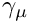
- Applies spin projection (1 + isign*
- QDP::spinReconstruct (QDPType psi, int dir, int isign)
- Applies spin reconstruction of (1 + isign*
- Applies spin reconstruction of (1 + isign*
- QDP::quarkContract13 (a,b)
- Epsilon contract 2 quark propagators and return a quark propagator. This is used for diquark constructions. Eventually, it could handle larger QDP::Nc. The numbers represent which spin index to sum over.
- The sources and targets must all be propagators but not necessarily of the same lattice type. Effectively, one can use this to construct an anti-quark from a di-quark contraction. In explicit index form, the operation quarkContract13 does
and is (currently) only appropriate for QPD::Nc=3 (i.e. SU(3)).
QDP::quarkContract14 (a,b)
- Epsilon contract 2 quark propagators and return a quark propagator:
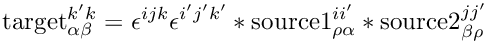
- QDP::quarkContract23 (a,b)
- Epsilon contract 2 quark propagators and return a quark propagator.
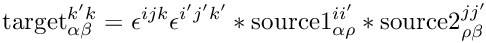
- Epsilon contract 2 quark propagators and return a quark propagator.
- QDP::quarkContract24 (a,b)
- Epsilon contract 2 quark propagators and return a quark propagator.
- Epsilon contract 2 quark propagators and return a quark propagator.
- QDP::quarkContract12 (a,b) Epsilon contract 2 quark propagators and return a quark propagator.
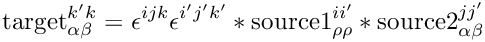
- QDP::quarkContract34 (a,b)
- Epsilon contract 2 quark propagators and return a quark propagator.
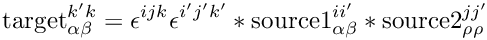
- Epsilon contract 2 quark propagators and return a quark propagator.
- QDP::colorContract (a,b,c)
- Epsilon contract 3 color primitives and return a primitive scalar.
- The sources and targets must all be of the same primitive type (a matrix or vector) but not necessarily of the same lattice type. In explicit index form, the operation colorContract does
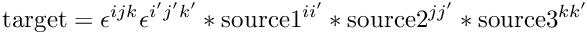
- or
and is (currently) only appropriate for Nc=3 (or SU(3)).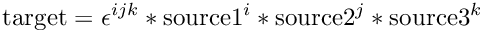
Operations on subtypes
Subtypes
Types in the QDP interface are parameterized by a variety of types, and can look like the following:
typedef OLattice<PScalar<PColorMatrix<RComplex<float>, Nc> > > LatticeColorMatrix typedef OLattice<PSpinVector<PColorVector<RComplex<float>, Nc>, Ns> > LatticeFermion
- machinetype Word type
- Basic machine types
- int
- float
- double
- bool
- Reality type
- RComplex
- RScalar
- Primitive type
- PScalar
- PVector
- PMatrix
- PSeed
- Inner grid type
- IScalar
- ILattice.
- Outer grid type
- OScalar
- OLattice.
Operations
Supported operations for each type level are as follows:
- Grid type
- OScalar
- OLattice
- IScalar
- ILattice
All operations listed in Sections Infix operators - More exotic functions
- Primitive type
- PScalar
- All operations listed in Sections Infix operators - More exotic functions
- PMatrix
- Unary
- -(PMatrix)
- +(PMatrix)
- Binary -(PMatrix,PMatrix)
- +(PMatrix,PMatrix)
- *(PMatrix,PScalar)
- *(PScalar,PMatrix)
- *(PMatrix,PMatrix)
- Comparisons
- none
- Assignments
- =(PMatrix)
- =(PScalar)
- -=(PMatrix)
- +=(PMatrix)
- *=(PScalar)
- Ternary
- C-lib funcs
- none
- QDP funcs
- all
- In place funcs
- all
- Reductions
- all
- Global Comparisons
- none
- Unary
- PVector
- Unary - -(PVector)
- +(PVector)
- Binary
- -(PVector,PVector)
- +(PVector,PVector)
- *(PVector,PScalar)
- *(PScalar,PVector)
- *(PMatrix,PVector)
- Comparisons
- none
- Assignments
- =(PVector)
- -=(PVector)
- +=(PVector)
- *=(PScalar)
- Ternary
- C-lib funcs
- none
- QDP funcs
- In place funcs - all
- Broadcasts
- =(Zero)
- Reductions
- all
- Global Comparisons
- none
- PSpinMatrix
- Binary
- *(PSpinMatrix,QDP::Gamma)
- *(QDP::Gamma,PSpinMatrix)
- Exotic
- QDP::peekSpin
- QDP::pokeSpin
- spinProjection
- spinReconstruction
- PSpinVector
- Binary
- *(QDP::Gamma,PSpinVector)
- Exotic
- QDP::peekSpin
- QDP::pokeSpin
- spinProjection
- spinReconstruction
- PColorMatrix
- Binary
- *(PColorMatrix,QDP::Gamma)
- *(QDP::Gamma,PColorMatrix)
- Exotic
- PColorVector
- Binary
- *(QDP::Gamma,PColorVector)
- Exotic
- Reality
- RScalar
- RComplex
- Word
- int
- float
- double
- bool
Detailed function description
The purpose of this section is to show some explicit prototypes and usages for the functions described in Section Supported Operations. In that section, all the functions are shown with complete information on which operations and their meaning are supported on some combination of types. The purpose of this section is something like the inverse - namely show all the functions and what are some (selected) usages.
Unary Operations
- Elementary unary functions on reals
- Syntax
- Type func(const Type& a)
- Meaning
- r = func(a)
- func
- Type
- Elementary unary functions on complex values
- Syntax
- Type func(const Type& a)
- Meaning
- r = func(a)
- func
- Type
- Assignment operations
- Syntax
- Type operator=(const Type& r, const Type& a)
- Meaning
- r = a
- Type
- All numeric types
- Shifting
- Syntax
- Type QDP::shift (const Type& a, int sign, int dir)
- Meaning
- r = a
- Type
- All numeric types
- Hermitian conjugate
- Syntax
- Type QDP::adj (const Type a)
- Meaning
- r = adagger
- Type
- QDP::Real
- QDP::Complex
- QDP::ColorMatrix
- QDP::DiracPropagatorF, QDP::DiracPropagatorD etc.
- Also corresponding lattice variants
- Transpose
- Syntax
- Type QDP::transpose (const Type a)
- Meaning
- r = transpose(a)
- Type
- QDP::Real
- QDP::Complex
- QDP::ColorMatrix
- QDP::DiracPropagatorF, QDP::DiracPropagatorD etc.
- Also corresponding lattice variants
- Transpose of color indices
- Syntax
- Type QDP::transposeColor (const Type a)
- Meaning
- r = transposeColor(a)
- Type
- QDP::Real
- QDP::Complex
- QDP::ColorMatrix
- QDP::DiracPropagatorF, QDP::DiracPropagatorD etc.
- Also corresponding lattice variants
- Transpose of spin indices
- Syntax
- Type QDP::transposeSpin (const Type a)
- Meaning
- r = transposeSpin(a)
- Type
- QDP::Real
- QDP::Complex
- QDP::SpinMatrix
- QDP::DiracPropagatorF, QDP::DiracPropagatorD etc.
- Also corresponding lattice variants
- Complex conjugate
- Syntax
- Type QDP::conj (const Type a)
- Meaning
- r =a*
- Type
- QDP::Real
- QDP::Complex
- QDP::ColorMatrix
- QDP::DiracPropagatorF, QDP::DiracPropagatorD etc.
- Also corresponding lattice variants
Type conversion
- Convert integer or float to double
- Syntax
- Type2 Type2(const Type1& a)
- Type1
- All single precision numeric types
- Type2
- All conforming double precision numeric types
- Example
- Convert double to float
- Syntax
- Type2 Type2(const Type1 a)
- Type1
- All double precision numeric types
- Type2
- All conforming single precision numeric types
- Example
- Integer to real
- Syntax Type2 Type2(
constType1& a) - Type1
- All integer precision numeric types
- Type2
- All conforming real precision numeric types
- Example
- QDP::LatticeInt a; QDP::LatticeReal r = QDP::LatticeReal (a);
- Real to integer
- Syntax Type2 Type2(const Type1& a)
- Example
- QDP::LatticeReal a; QDP::LatticeInt r = QDP::LatticeInt (a);
- Real to float
The QDP type QDP::Real is not a primitive type, so an explicit conversion is provided.
- Syntax
- float QDP::toFloat (const QDP::Real& a)
- Meaning r = float(a)
- Example
- QDP::Real a; float r = QDP::toFloat (a);
- Double to double
The QDP type QDP::RealD is not a primitive type, so an explicit conversion is provided.
- Syntax
- double QDP::toDouble (const QDP::RealD& a)
- Meaning r = double(a)
- Example
- QDP::RealD a; double r = QDP::toDouble (a);
- Boolean to bool
The QDP type QDP::Boolean is not a primitive type, so an explicit conversion is provided.
- Syntax
- bool QDP::toBool (const QDP::Boolean& a)
- Meaning r = bool(a)
- Example
- QDP::Boolean a; bool r = QDP::toBool (a);
Operations on complex arguments
- Convert real and imaginary to complex
- Syntax
- Type QDP::cmplx (const Type1& a, const Type2& b)
- Meaning
- Re r = a, Im r = b
- Type1
- Constant
- QDP::Real
- Also corresponding lattice variants
- Type2
- Constant
- QDP::Real
- Also corresponding lattice variants
- Type
- QDP::Complex
- Also corresponding lattice variants
- Real part of complex
- Syntax
- Type QDP::real (const Type& a)
- Meaning
- r = Re a
- Imaginary part of complex
- Syntax
- Type QDP::imag (const Type& a)
- Meaning
- r = Im a
Component extraction and insertion
- Accessing a site object
- Syntax
- Type QDP::peekSite (const LatticeType& a, const multi1d<int>& c)
- Meaning
- r = a[x]
- Accessing a color matrix element
- Syntax
- QDP::LatticeComplex QDP::peekColor (const QDP::LatticeColorMatrix& a, int i, int j)
- QDP::LatticeSpinMatrix QDP::peekColor (const QDP::LatticeDiracPropagator& a, int i, int j)
- QDP::LatticeComplex QDP::peekColor (const QDP::LatticeColorMatrix& a, int i, int j)
- Meaning
- r = ai,j
- Inserting a color matrix element
- Syntax
- QDP::LatticeColorMatrix& QDP::pokeColor (QDP::LatticeColorMatrix& r, const QDP::LatticeComplex& a, int i, int j)
- Meaning
- ri,j = a
- Accessing a color vector element
- Syntax
- QDP::LatticeComplex QDP::peekColor (const QDP::LatticeColorVector& a, int i)
- QDP::LatticeSpinVector QDP::peekColor (const QDP::LatticeDiracFermion& a, int i)
- Meaning
- r = ai
This function will extract the desired color component with all the other indices unchanged.
A lattice color vector is another name (typedef) for a QDP::LatticeStaggeredFermion. Namely, an object that is vector in color spin and a scalar in spin space. Together with spin accessors, one can build a QPD::LatticeDiracFermion.
- Inserting a color vector element
- Syntax
- QDP::LatticeColorVector QDP::pokeColor (QDP::LatticeColorVector& r, const QDP::LatticeComplex& a, int i})
- Meaning
- ri = a
This function will extract the desired color component with all the other indices unchanged.
A lattice color vector is another name (typedef) for a QDP::LatticeStaggeredFermion. Namely, an object that is vector in color spin and a scalar in spin space. Together with spin accessors, one can build a QDP::LatticeDiracFermion{} or a QDP::LatticeDiracPropagator.
- Accessing a spin matrix element
- Syntax
- QDP::LatticeComplex QDP::peekSpin (const QDP::LatticeSpinMatrix& a, int i, int j)
- QDP::LatticeColorMatrix QDP::peekSpin (const QDP::LatticeDiracPropagator& a, int i, int j)\
- Meaning
- r = ai,j
- Syntax
- Inserting a spin matrix element
- Syntax
- QDP::LatticeSpinMatrix& QDP::pokeSpin (QDP::LatticeSpinMatrix& r, const QDP::LatticeComplex& a, int i, int j)
- Meaning
- ri,j = a
- Accessing a spin vector element
- Syntax
- QDP::LatticeComplex QDP::peekSpin (const QDP::LatticeSpinVector& a, int i)
- QDP::LatticeColorVector QDP::peekSpin (const QDP::LatticeDiracFermion& a, int i)
- Meaning
- r = ai
This function will extract the desired spin component with all the other indices unchanged.
A lattice spin vector is an object that is a vector in spin space and a scalar in color space. Together with color accessors, one can build a QDP::LatticeDiracFermion or a QDP::LatticeDiracPropagator.
- Inserting a spin vector element
- Syntax
- QDP::LatticeSpinVector QDP::pokeSpin (QDP::LatticeSpinVector& r, const QDP::LatticeComplex& a, int i)
- Meaning
- ri = a
This function will extract the desired spin component with all the other indices unchanged.
A lattice spin vector is an object that is a vector in spin space and a scalar in color space. Together with color accessors, one can build a QDP::LatticeDiracFermion or a QDP::LatticeDiracPropagator.
- Trace of matrix
- Syntax
- Type2 QDP::trace (const Type1& a)
- Meaning
- r = Tr a
- Type1
- QDP::ColorMatrix
- QDP::DiracPropagatorD, QDP::DiracPropagatorF, etc.
- Also corresponding lattice variants
- Type2
- QDP::Complex
- QDP::Complex
- Also corresponding lattice variants
- Example QDP::LatticeColorMatrix a; QDP::LatticeComplex r = QDP::trace (a);
Traces over all matrix indices. It is an error to trace over a vector index. It will trivially trace a scalar variable.
- Color trace of matrix
- Syntax
- Type2 QDP::traceColor (const Type1& a)
- Meaning
- r = Tr a
- Type1
- QDP::ColorMatrix
- Also corresponding lattice variants
- Type2
- QDP::Complex
- Also corresponding lattice variants
- Example
Traces only over color matrix indices. It is an error to trace over a color vector index. All other indices are left untouched. It will trivially trace a scalar variable.
- Spin trace of matrix
- Syntax
- Type2 QDP::traceSpin (const Type1& a)
- Meaning
- r = Tr a
- Type1
- QDP::DiracPropagatorF, QDP::DiracPropagatorD, etc.
- Also corresponding lattice variants
- Type2
- QDP::ColorMatrix
- Also corresponding lattice variants
- Example
- QDP::LatticeDiracPropagator a;
- QDP::LatticeColorMatrix r = QDP::traceSpin(a);
Traces only over spin matrix indices. It is an error to trace over a spin vector index. All other indices are left untouched. It will trivially trace a scalar variable.
- Dirac spin projection
- Syntax
- Type2 QDP::spinProject (const Type1& a, int d, int p)
- Type2 QDP::spinProject (const Type1& a, int d, int p)
- Meaning
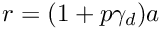
- Type1
- QDP::DiracFermionF, QDP::DiracFermionD etc.
- Also corresponding lattice variants
- Type2
- QDP::HalfFermion
- Also corresponding lattice variants
- Dirac spin reconstruction
- Syntax
- Type2 QDP::spinReconstruct (const Type1& a, int d, int p)
- Meaning
- r = recon(p,d,a)
- Type1
- QDP::HalfFermion
- Also corresponding lattice variants
- Type2
- QDP::DiracFermionF, QDP::DiracFermionD, etc
- Also corresponding lattice variants
Binary Operations with Constants
- Multiplication by real constant
- Syntax
- Type operator*(const QDP::Real& a, const Type& b)
- Type operator*(const Type& b, const QDP::Real& a)
- Meaning
- r = a*b (a real, constant)
- Type
- All floating types
- Multiplication by complex constant
- Syntax
- Type operator*(const QDP::Real& a, const Type& b)\
- Type operator*( const Type& b, const QDP::Real &a)\
- Meaning
- r = a*b (a complex, constant)
- Type
- All numeric types
- Left multiplication by gamma matrix
- Syntax
- Type operator*(const QDP::Gamma& a, const Type& b)
- Meaning
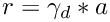
- Gamma
- Gamma constructed from an explicit integer in [0,Ns2-1]
- Types
- QDP::SpinVector
- QDP::SpinMatrix
- QDP::HalfFermion
- QDP::DiracFermionF, QDP::DiracFermionD etc.
- QDP::DiracPropagatorF, QDP::DiracPropagatorD etc.
- similar lattice variants
- Example
- r = QDP::Gamma (7) * b;
- Right multiplication by gamma matrix
- Syntax
- Type operator*(const Type& a, const Gamma& b)
- Meaning
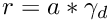
- Gamma
- Gamma constructed from an explicit integer in [0,Ns2-1]
- Types
- QDP::SpinVector
- QDP::SpinMatrix
- QDP::HalfFermion
- QDP::DiracFermionF, QDP::DiracFermionD etc.
- QDP::DiracPropagatorF, QDP::DiracPropagatorD etc.
- similar lattice variants
See Section Spin Conventions for details on 
Binary Operations with Fields
- Division of real fields
- Syntax
- Type operator/(const Type& a, const Type& b)
- Meaning
- r = a / b
- Type
- All numeric types
- Addition
- Syntax
- Type operator+(const Type& a, const Type& b)
- Meaning
- r = a + b
- Type
- All numeric types
- Subtraction
- Syntax
- Type operator-(const Type& a, const Type& b)
- Meaning
- r = a - b
- Type
- All numeric types
- Multiplication: uniform types
- Syntax
- Type operator*(const Type& a, const Type& b)
- Meaning
- r = a * b
- Type
- ColorMatrix matrix from outer product
- Syntax
- Type QDP::outerProduct (const Type1& a, const Type2& b)
- Meaning
- rj,k = aj * bk*
- Type1
- Type2
- Type
- Left multiplication by gauge matrix
- Syntax
- Type operator*(const Type1& a, const Type& b)
- Meaning
- r = a * b
- Type1
- Type
- Constant
- QDP::Complex
- QDP::ColorMatrix
- QDP::ColorVector
- QDP::SpinVector
- QDP::DiracPropagatorF, QDP::DiracPropagatorD, etc.
- and similar lattice variants
- Right multiplication by gauge matrix
- Syntax
- Type operator*(const Type& a, const Type1& b)
- Meaning
- r = a * b
- Type1
- Type
- QDP::ColorMatrix
- QDP::SpinMatrix
- QDP::DiracPropagatorF, QDP::DiracPropagatorD, etc.
- and similar lattice variants
Boolean and Bit Operations
- Comparisons
- Syntax
- Type2 op(const Type& a, const Type1& b)
- Meaning
- r = a op b
- r = op(a, b)
- op
- <
- >
- !=
- <=
- >=
- ==
- Type1
- QDP::Int
- QDP::Real
- QDP::RealD
- similar lattice variants
- Type2
- QDP::Boolean
- QDP::LatticeBoolean (result is lattice if any arg is lattice)
- Elementary binary operations on integers
- Syntax
- Type2 op(const Type& a, const Type1& b)
- Meaning
- r = a op b
- r = op(a, b)
- op
- <<
- >>
- &
- |
- ^
- mod
- max
- min
- Elementary binary operations on reals
- Syntax
- Type2 op(const Type& a, const Type1& b)
- Meaning
- r = a op b
- r = op(a, b)
- op
- mod
- max
- min
- Type
- QDP::Real
- QDP::RealD
- similar lattice variants
- Boolean Operations
- Syntax
- Type op(const Type& a, const Type& b)
- Meaning
- r = a op b
- op
- |
- &
- ^
- Type
- Syntax -Type op(const Type& a)
- Meaning
- r = not a
- op
- !
- Type
- Copymask
- Syntax
- void QDP::copymask (const Type2& r, const Type1& a, const Type1& b)
- Meaning
- r = b if a is true
- Type
- All numeric types
Reductions
Global reductions sum over all lattice sites in the subset specified by the left hand side of the assignment.
- Norms
- Syntax
- QDP::Real QDP::norm2 (Type& a)
- Meaning
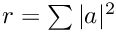
- Type
- All numeric types
- Inner products
- Syntax
- QDP::Complex QDP::innerProduct (Type& a, const Type& b)
- Meaning
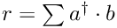
- Type
- All numeric types
- Global sums
- Syntax
- Type QDP::sum (const LatticeType& a)
- Meaning
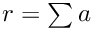
- Type
- All numeric types
Global comparisons
Find the maximum or minimum of a quantity across the lattice. These operations do not have subset variants.
- Global maximum
- Syntax
- Type QDP::globalMax (const LatticeType& a)
- Meaning
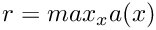
- Type
- Only reals
- Global minimum
- Syntax
- Type QDP::globalMin (const LatticeType& a)
- Meaning
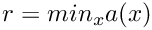
- Type
- Only reals
Fills
- Coordinate function fills
- Syntax
- QDP::LatticeInt Layout::latticeCoordinate( int d)
- Meaning
- r = f(d) for direction d
- Returns the lattice coordinates in direction d
The call Layout::latticeCoordinate (d) returns an integer lattice field with a value on each site equal to the integer value of the dth space-time coordinate on that site.
- Constant fills
- Syntax
- LatticeType operator=(LatticeType& r, const Type& a)
- Meaning
- r = a for all sites
- Types
- All non-lattice objects
- Example
- QDP::Real a = 2.0;
- QDP::LatticeReal r = a;
Constant (or lattice global) fills are always defined for lattice scalar objects broadcasting to all lattice sites. These are broadcasts of a lattice scalar type to a conforming lattice type.
N.B. one cannot fill a QDP::LatticeColorVector with a QDP::Real.
- Syntax
- LatticeType operator=(LatticeType& r, const Type& a)
- Meaning
- r = diag(a, a, ..., a) (constant a)
- Type
- Example
- QDP::Real a = 2.0;
- QDP::LatticeColorMatrix r = a;
Only sets the diagonal part of a field to a constant a times the identity.
This fill can only be used on primitive types that are scalars or matrices. E.g., it can not be used for a vector field since there is no meaning of diagonal. N.B., a zero cannot be distinguished from a constant like 1. To initialize to zero the zero argument must be used.
- Zero fills
- Syntax
- Type operator=(Type& r, const Zero& zero)
- Meaning
- r = 0
- Type
- All numeric types
- Example
- QDP::LatticeDiracFermion r = zero;
This is the only way to fill a vector field with a constant (like zero).
- Uniform random number fills
- Syntax
- void QDP::random (Type& r)
- Meaning
- r random, uniform on [0,1]
- Type
- All floating types
- Gaussian random number fills
- Syntax
- void QDP::random (Type& r)
- Meaning
- r random, normal gaussian
- Type
- All floating types
- Seeding the random number generator
- Syntax
- void RNG::setrn (const QDP::RandomState& a)
- Meaning
- Initialize the random number generator with seed state a.
- Extracting the random number generator seed
- Syntax
- void RNG::savern ( QDP::RandomState& r)
- Meaning
- Extract the random number generator into seed state r
Generated by